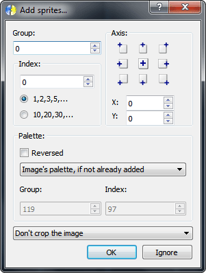

Menu Sprites
The Sprites menu is used to manipulate the sprites (images) of the project.
New
Create a new empty file.
Open
Open an existing file. Note: When loading a SFF 1.0.1.0 (character), all external palettes must be opened first to preserve all SFF 2.x possibilities.
Save
Overwrite the last saved file, if it exist. Else, execute 'Save as...'.
Save as...
Save the sprites on a new file. This function asks for the output format.
Add
Add one or more sprites, starting on the next position from the current.
First, you must select all files you want to add. After it, the 'Add sprites...' window will be shown. In this window, you can choose some options used to define all the sprite information. The options are:
Group: sprite's group.
Index: sprite's index within the group, defined by the field value. You can choose the increment by selecting the appropriate option below the field (one by one or ten by ten).
Axis: sprite's axis. You can choose the axis position clicking in one of the buttons. If none button is pressed, the custom X/Y values will be used.
Palette: sprite's palette. The 'Reversed' option determines if the image indexes will be inverted or not (only on 8-bit images). Below it, you can choose the source of the palette, that can be:
Image's own palette, that will be added to the editor if doesn't exist any equal palette.
Force the specified palette. The image indexes will be changed to match with the closest color (starting from the index 0) in the palette (group, index) specified in the fields below. Note: the target palette must be present in the editor.
Exchange with the specified palette. The image indexes will be kept, but the sprite will point to the palette (group, index) specified in the fields below. Note: the target palette must be present in the editor.
Crop options: defines if the image will be cropped and the method (before or after the axis calculation).
If you hit OK, the options above will be applied. Else, the default options will be used (group: 0, index: 0, axis: 0,0, image's own palette, don't crop).
Delete
Removes the current sprite. Note: A confirmation will be shown if is defined in the Options window. The sprite palette will be kept.
Change image...
Change the current sprite image. Note: The palette of the sprite will be kept in the editor, but the new image will point to your own palette if it is different from the old one.
Save image...
Save one or more sprite to a file (image). This function displays the 'Range' window that defines what sprites will be saved.
The options are:
Current: only the current sprite.
All: all sprites.
Group: only the specified group.
Intervall: only the interval from Start to End (sprite index within the group).
Note: The image will be saved with the current palette.
Save image (aligned)...
Save one or more sprites to a file (image), with a fixed axis that reflects the alignment of all sprites (perfect axis). This function displays the 'Range' window that defines what sprites will be saved. See Save image...
Crop image
Removes all empty pixels in the borders of the current image.
Crop all images
Removes all empty pixels in the borders of all images.
Duplicate
Duplicates the current sprite. A window will be shown to the user choose if the image will be linked or cloned.
The options are:
Link the image: the image doesn't will be copied. The sprite will point to the source image.
Copy the image: the image of the source sprite wil be copied (duplicated).
Delete group
Displays a window to the user choose a group to delete.
The options are:
Group: the group to delete.
Entire group: all sprites of this group.
Intervall: only the indexes from Start to End.
Note: No confirmation will be shown if you hit OK. The sprite palette will be kept.
Rename group

Displays a window to the user choose a group to rename (entire group or intervall) and the new group number.
The options are:
Group: the group to rename.
New group: the new group number.
Entire group: all sprites of this group.
Intervall: only the indexes from Start to End.
Note: No confirmation will be shown if you hit OK.
Alignment tool
Displays the sprite alignment window. In this window, you can adjust the axis of all selected sprites in the list.
The X and Y fields are used to define the increment. You can also enter a negative number to decrement.
To select a sprite, click on the list. For more than one sprite you can use Ctrl+Click (add the item to the curret selecton) or Shift+Click (range selection).
On the bottom-right you have three buttons to manipulate the current selection (Select all, Clear selection and Inverse).
Every time you hit Apply, the increment will be applied.
Image editor
Open the image editor. If you have a valid sprite in the editor, the image will be loaded as the first layer at startup. See Image editor
Split channels
Split the RGB channels of the current sprite into three new sprites, one for each channel. Note: The current sprite will be replaced by the Red channel.
Export...
Exports a group or all sprites. The 'Export' window will be shown to define the sprites that will be exported. After it, you must define the output and format (Fighter Factory or SprMaker2). Then, the sprites will be saved (PNG format) and a text file will be generated with the sprite information.
Import...
Import one or more sprites to the editor from a Fighter Factory Export file. All sprites and palettes described in the file will be imported.
Note: The sprites will be placed in the next position from the current sprite.
Import from another project...
Import one or more sprites from another project in the same Fighter Factory instance.
The options are:
Source
Project: the source project.
All: all sprites.
Group: only the specified group.
Only the indexes: only the specified interval (sprite index within the group).
Destination
Keep numbering: the group of the source sprites will be kept.
Renumber: change the group number of the source sprites to the specified value.
Add: don't replace the group number, just add the specified value to the original.
Note: The sprites will be placed in the next position from the current sprite.
Palette
Is this section you can choose the source of the palette, that can be:
Image's own palette, that will be added to the editor if doesn't exist any equal palette.
Force the specified palette. The image indexes will be changed to match with the closest color (starting from the index 0) in the palette (group, index) specified in the fields below. Note: the target palette must be present in the editor.
Exchange with the specified palette. The image indexes will be kept, but the sprite will point to the palette (group, index) specified in the fields below. Note: the target palette must be present in the editor.
Switch to the frame's sprite
Switch to the sprite of the current frame when activating the sprites editor.